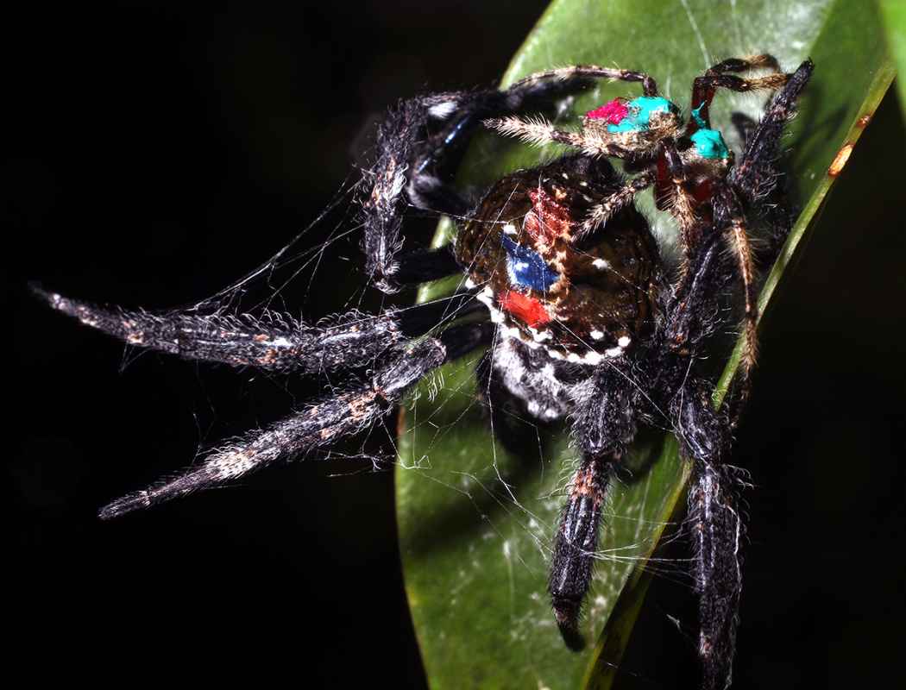

1. Овец в Новой Зеландии в 6 раз больше, чем людейПо данным национального статистического агенства Новой Зелиндии на 4,8 миллиона ее жителей приходится около 28 миллионов овец. Да и что уж там, только 5 % населения Новой Зеландии составляют люди, остальные ее обитатели — животные. |
||
2. Самые опасные птицы в мире — казуарыОни могу убить человека одним ударом мощных ног с когтями длинной 10 см. Ни один хищник не свяжется с казуаром, зная его агрессивный, непредсказуемый нрав, быструю реакцию и мощный удар, способный «вырубить» и зверя, и взрослого человека. Очаровательная птичка! |
||
3. Самый ушастый зверь на планете не слон, а китайский тушканчикЭтот редкий маленький зверек по размерам не более 9 см имеет самые длинные уши в мире, если считать относительно длины тела. Длина его ушей достигает 5 см, что составляет больше половины длины его тела. Для сравнения: длина ушей африканского слона менее четверти длины тела. |
||
4. Самое разрушительное насекомое — пустынная саранчаПри нападении большой стаей она способна уничтожить полностью весь урожай, оставив после себя голую пустыню без признаков растительности, как после стихийного бедствия. |
||
5. За всю свою жизнь пчела производит всего лишь две чайные ложки медаЭто объясняет то, почему численности их колоний обычно исчисляются десятками тысяч особей. При этом все пчелы мира ежедневно опыляют порядка трех триллионов различных цветов. |
||
6. Совы могут поворачивать голову на 270 градусовТо есть, любая сова может спокойно посмотреть на то, что происходит у нее за спиной, не меняя при этом позы. Такая гибкость шеи возможна благодаря большому количеству шейных позвонков, которых у совы 14 (а у человека только 7). |
||
7. Вес шкуры гиппопотама может достигать 500 кг, а его пот имеет красный цветПри этом вес каждой особи может достигать четырех тонн, высота – полутора метров, длина – до 4,5 м. А железы животного выделяют особый секрет - слизь розовато-красного цвета. Поэтому вспотевший бегемот выглядит так, как будто он истекает кровью. Эта слизь имеет в своем составе оранжевые и красные пигменты, выполняющие важное предназначение - отражение ультрафиолетового излучения. |
||
 |
8. Самую большую паутину (до 25 м в длину) плетет паук Дарвина с острова МадагаскарЭти членистоногие создают сети невероятных размеров. Самая большая зафиксированная ловушка имела площадь 3 квадратных метра. Но ученые уверяют, что сети могут быть более масштабными. Паутины настолько большие, что пауки растягивают их над ручьями и даже озерами. |
|
9. Странствующий альбатрос может спать на лету по несколько часовДействует птица по тому же принципу, что и дельфин: в полете у альбатроса отдыхает одна половина мозга, а вторая следит, чтобы он удерживался в воздухе и ни с чем не столкнулся. |
||
10. Дудак и большая африканская дрофа — самые тяжелые летающие птицыСредний вес каждой — не менее 16 кг. Описаны дрофы весом 19 кг и дудаки весом 18 кг, хотя есть и неподтвержденные сведения о самце дудака весом 21 кг, подстреленном в Маньчжурии, который был слишком тяжел, чтобы летать. Крылья таких птиц в размахе достигают до 2,4 м. |
||